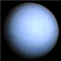
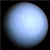
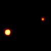
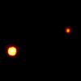

The planets of our solar system
Mercury, Venus, Earth, and Mars are considered the inner planets.
Jupiter, Saturn, Uranus, and Neptune are gas giants and much larger than
the inner planets.
Until recently the list of planets has included Pluto. On this page we
have brought Earth in front of the others, and by placing Pluto behind
the others it is obscured. Only its moon Charon is visible.


 

 
